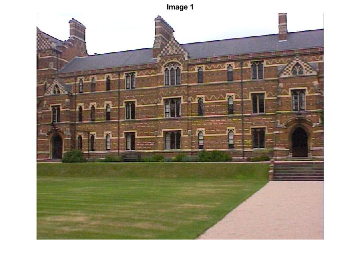
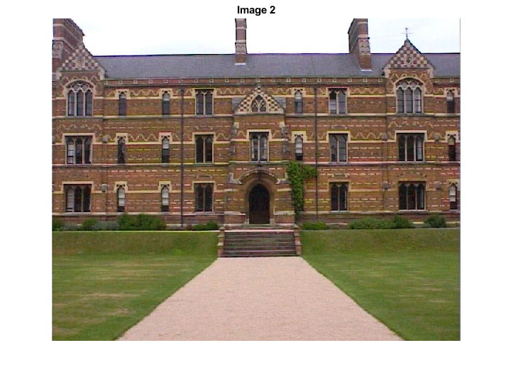
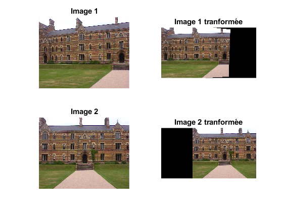
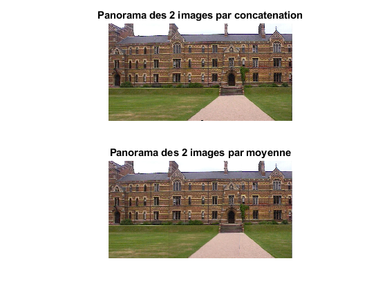

clc;
close all;
clear;
k_loop = 7
n_random = 16
w= 0.5
p = (1-w^n_random)^k_loop
im1 = im2double(imread('keble_a.jpg'));
im2 = im2double(imread('keble_b.jpg'));
figure()
imshow(im1,[])
title('Image 1')
figure()
imshow(im2,[])
title('Image 2')
fileID = fopen('matchesab.txt','r');
compteur_max=0;
formatSpec = '%f %f %f %f';
sizeA = [4 Inf];
data_array = fscanf(fileID,formatSpec,sizeA);
data_array = data_array';
data_array = int64(data_array);
fclose(fileID);
for loop=1:k_loop
msize = numel(data_array(:,1));
idx = randperm(msize);
data=data_array(idx(1:n_random),:);
[l,w]=size(data);
M=zeros(2*l,9);
for k=1:l
M(2*k-1,1)=data(k,1);
M(2*k-1,2)=data(k,2);
M(2*k-1,3)=1;
M(2*k-1,7)=-data(k,3)*data(k,1);
M(2*k-1,8)=-data(k,3)*data(k,2);
M(2*k-1,9)=-data(k,3);
M(2*k,4)=data(k,1);
M(2*k,5)=data(k,2);
M(2*k,6)=1;
M(2*k,7)=-data(k,4)*data(k,1);
M(2*k,8)=-data(k,4)*data(k,2);
M(2*k,9)=-data(k,4);
end
[U,S,V]=svd(M);
h=V(:,end);
h=reshape(h,[3,3])';
new_image1=vgg_warp_H(im1,h,'cubic','img',0);
compteur = 0;
[l_i,w_i]=size(new_image1);
for i=1:l_i
for j=1:w_i
if new_image1(i,j)==im2(i,j)
compteur=compteur+1;
end
end
end
if compteur >= compteur_max
compteur_max = compteur;
save_h=h;
save_data=data;
end
end
save_h_2=eye(3)
new_image1=vgg_warp_H(im1,save_h,'linear',[-350 720 1 568],1);
new_image2=vgg_warp_H(im2,save_h_2,'linear',[-350 720 1 568],1);
figure()
subplot(221)
imshow(im1,[])
title('Image 1')
subplot(222)
imshow(new_image1,[])
title('Image 1 tranformée')
subplot(223)
imshow(im2,[])
title('Image 2')
subplot(224)
imshow(new_image2,[])
title('Image 2 tranformée')
panorama_simple =[new_image1(:,1:554,:) new_image2(:,554:end,:)];
new_image1 = max(0,new_image1);
new_image2 = max(0,new_image2);
new_image1(new_image2==0) = new_image1(new_image2==0)*2;
new_image2(new_image1==0) = new_image2(new_image1==0)*2;
panorama_mean=new_image1./2 + new_image2./2;
figure()
subplot(211)
imshow(panorama_simple,[])
title('Panorama des 2 images par concatenation')
subplot(212)
imshow(panorama_mean,[])
title('Panorama des 2 images par moyenne')
k_loop =
7
n_random =
16
w =
0.5000
p =
0.9999
save_h_2 =
1 0 0
0 1 0
0 0 1
   